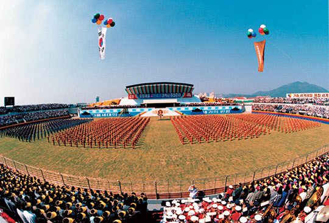

연재일 2015-05-27출처 조선일보 프리미엄조선 연재
<①편에서 계속>
“이 고로의 불꽃이 국가재건, 민족중흥의 불꽃이야.”
“이 불꽃을 끝까지 짊어지고 가겠습니다.”
“우리는 이 불꽃을 끝까지 짊어지고 가야 해.”
1973년 7월 3일 일제 식민지 배상금으로 완공한 포철 1고로 앞에서 박정희와 연애의 밀어처럼 속삭였던 대화. 오로지 그것만이 포스코 회장 자리를 스스로 물러나려는 박태준의 마음을 부드럽게 쓰다듬었다. 용케도 그 불꽃을 끝까지 짊어지고 왔구나. 그는 안도의 숨을 내쉬며 눈을 떴다. 비로소 눈앞에 도열한 포스코 직원들의 모습이 한눈에 들어왔다. 고생들 많았고 수고들 많았어. 그가 혼잣말을 하며 미소를 머금는 사이, 노태우가 마이크 앞에 서 있었다.
민정당 대표를 맡지 않겠다고 박태준은 진심으로 극구 사양했으나 기어코 그 굴레를 그에게 덮씌운 사람, 민주주의의 축제라는 모양새를 얼마나 진정으로 추구했는지 몰라도 박태준에게 여당 대통령 후보 경선에 나서 달라고 슬쩍 권유하더니 얼마 못 가서는 김영삼의 몽니에 겁을 먹고 거꾸로 그걸 얼른 그만두지 않는다며 조바심을 부려댄 사람. 25년 대역사를 종합준공 하는 자리의 박태준에게 노태우는 그런 사람이었다. 하지만 대통령의 치하 중 몇 마디가 포철 회장의 고막을 건드렸다.

“자본, 기술, 경험이 제대로 갖춰지지 않은 상태에서 시작해 4반세기 만에 연간 2100만 톤의 생산능력을 지닌 세계 3위의 철강회사로 성장한 포철의 위업은 세계 철강사에 길이 빛날 금자탑이 될 것입니다.”
세계철강협회장 로튼이 나섰다. 그는 진정어린 격찬을 아끼지 않았다.
“포스코와 박태준 회장이 이룩한 업적은 추진력과 엄격성과 탁월성으로 세계에 빛나는 모범이며, 4반세기라는 짧은 기간에 이처럼 거대한 기업을 이룬 데 대해 찬사와 존경을 아끼지 않습니다.”
이윽고 박태준이 연단에 올랐다. 두 개의 마이크가 놓인 자리, 금빛도 은빛도 없는 그저 평범한 자리. 그러나 그 자리는 세계 최고의 철강인이 오르는, ‘철강황제’ 또는 ‘철강왕’에게 어울리는, 보이지 않는 ‘철(鐵)의 용상(龍床)’이었다. 박태준의 인생에는 찬란한 절정의 순간이었다. 그는 벅찬 감회를 여느 때와 다르지 않은 목소리로 밝혀 나갔다.
“오랜 대역사 속에서 민족경제의 초석을 다진다는 일념으로 몸 바쳐 일하다가 유명을 달리하신 동지들의 혼령이 오늘 이 자리를 지켜보고 계실 것을 생각하니 실로 만감이 교차합니다. 제철보국의 정신 아래 ‘민족기업 인간존중 세계지향’의 기업이념을 더욱 착실히 펼쳐나가는 한편, 21세기를 지향하는 새로운 기업상을 정립할 것입니다. 그리고 국민 여러분의 끊임없는 사랑을 바탕으로 어떤 어려움이라도 헤쳐 나가면서 기필코 ‘다음 세기의 번영과 다음 세대의 행복’을 창조하는 국민 기업의 지평을 열어갈 것입니다.”
그러나 박태준이 가장 깊은 속마음을 펼쳐놓을 자리는 따로 있었다. 격정을 안으로 차분히 다스린, 고로의 불꽃처럼 타오르는 울먹임을 한 줄기 찬물처럼 찬찬히 풀어놓을 곳이 그에겐 따로 있었다.
성대한 잔치가 끝났다. 손님들이 돌아갔다. 장엄한 무대 위의 모든 의자들이 치워졌다. 세계 최고의 철강인이 앉았던 평범한 의자도 치워졌다. 그러나 치워진 것은 평범한 의자가 아니었다. ‘철의 용상’이 그 주인의 의지에 따라 무대를 내려간 것이었다.